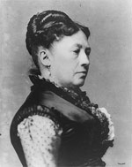

|

|

|
|
|
Wife of General and President Ulysses S. Grant, Julia Dent
was born at White Haven, Missouri, on January 26, 1826.
Daughter of a slaveholding planter, Julia grew up in a close
and affectionate family that included seven siblings. After
attending an elite boarding school in nearby St. Louis, the
eighteen-year old Julia was introduced to her older
brother's West Point roommate, Ulysses S. Grant, aged
twenty-two. Their two-year courtship and four-year
engagement were conducted in the midst of Grant's frequent
absences in army service, including the Mexican War. Finally
married in 1848, Julia accompanied Ulysses to an obscure
military outpost near Sackets Harbor, New York. The life of
an army wife was filled with uncertainty and loneliness, but
Julia worked hard to ensure a happy family. A fun, lively,
and charming woman, her great love and affection for Ulysses
was returned in full. Within ten years of their marriage she
was busy raising four children.
Julia experienced many disappointments in the 1850s.
Bored and frustrated with the professional military life,
Ulysses resigned from the army in 1854. Returning to St.
Louis, he tried his hand at various occupations, including
farming. Almost totally dependent upon her father's charity,
Julia and Ulysses struggled with poverty and his depression.
Despite a record of failure, Julia stoutly defended her
husband, believing that one day his talent and intelligence
would find an outlet. In 1859 they moved their family to
Galena, Illinois, so that Ulysses could work in his father's
leather goods store. When the war broke out in 1861, Ulysses
volunteered his services immediately, and the next few years
saw his swift rise to fame and glory as the Union's top
general.
If everyone else was surprised by her husband's rapid
elevation to hero of the northern army, the ever-loyal Julia
was not. She basked in his reflected glory, and expanded her
role as his helper and confidante. No other wife of a
prominent general spent more time with her husband on
campaigns. At the end of the war, Julia had developed a
confidence that would impress citizens when she served as
first lady during the eight years of her husband's
presidency, 1868-1876. "My life at the White House was like
a bright and beautiful dream and we were immeasurably
happy," she later wrote. The Grants and their young children
became the object of a country's adoration as they set a new
style of friendly, casual and constant entertaining. Julia
also shared the setbacks of the Grant presidency, as
corruption and scandal marked their last years in
Washington, D.C.
A few years after leaving the White House, the Grants
retired to New York, where they expected to live out their
lives in comfort. Unfortunately, in 1884, Grant lost all the
family money in a financial disaster. Shortly afterward, he
developed the throat cancer that led to his death in 1885.
In his dying days, Grant completed his Memoirs, which
left Julia and the children financially secure. After his
death, Julia lived for seventeen years with her daughter in
Washington, D.C., where she wrote her own Memoirs.
She died on December 14, 1902. Julia Dent Grant is interred
alongside her husband in General Grant's National Monument
(Grant's Tomb) in New York City.
Source: Joan Waugh, ed., Facts on File Encyclopedia of American
History: Civil War and Reconstruction, 1856 to 1869 (New York: Facts on
File, 2003), 154-158.
|